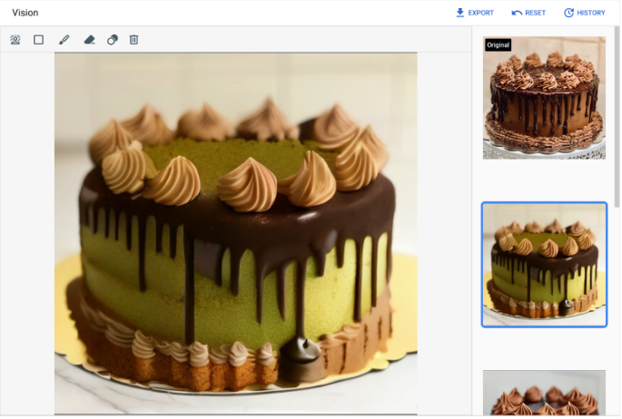

Edit images using text prompts¶
Caution:
Starting on June 24, 2025, Imagen versions 1 and 2 are deprecated. Imagen models
imagegeneration@002,imagegeneration@005, andimagegeneration@006will be removed on September 24, 2025 . For more information about migrating to Imagen 3, see Migrate to Imagen 3.
This page describes how to edit an image using only a text prompt, a technique also known as mask-free editing. This method is useful for making changes that affect the entire image or when the precise location of the edit is not critical.
Mask-free editing example¶
You can edit a base image (either generated or uploaded) using only a text prompt without needing to specify an area to modify. The update is applied to the entire image.
To perform a mask-free edit, provide a prompt that describes the desired outcome rather than instructing what to change. For example, to change an image of a cat into a dog, a prompt like "a dog" is more effective than "change the cat to a dog". Similarly, if you generated an image with the prompt "a cat at the beach", you can change it by using the edit prompt "a dog at the beach".
Right (Edited image): Image generated using Imagen on Vertex AI with the original base image and the prompt: a dog.
View Imagen for Editing and Customization model card
Before you begin¶
Concepts
- Mask-free editing: An image editing technique that modifies an entire image based on a text prompt, without requiring a specific region (mask) to be selected.
- Prompt: A natural language text instruction given to a generative model to specify the desired output.
- Seed: A number used to initialize the random generation process, allowing for reproducible image outputs when the same seed and prompt are used.
- Guidance scale: A parameter that controls how strongly the generated image adheres to the text prompt. Higher values result in images that more closely follow the prompt.
- Base64 encoding: A method for converting binary data (like an image file) into a text string, which allows it to be easily included in text-based formats like JSON.
Prerequisites
1. Set up your Google Cloud project
- Sign in to your Google Cloud account. If you're new to Google Cloud, create an account to evaluate how our products perform in real-world scenarios. New customers also get $300 in free credits to run, test, and deploy workloads.
-
In the Google Cloud console, on the project selector page, select or create a Google Cloud project.
Note: If you don't plan to keep the resources that you create in this procedure, create a project instead of selecting an existing project. After you finish these steps, you can delete the project, removing all resources associated with the project.
-
Make sure that billing is enabled for your Google Cloud project.
-
Enable the Vertex AI API.
2. Set up authentication
To use the samples on this page, you need to set up authentication.
When you use the Google Cloud console to access Google Cloud services and APIs, you don't need to set up authentication.
To use the Python samples on this page in a local development environment, install and initialize the gcloud CLI, and then set up Application Default Credentials with your user credentials.
- Install the Google Cloud CLI.
- If you're using an external identity provider (IdP), you must first sign in to the gcloud CLI with your federated identity.
- To initialize the gcloud CLI, run the following command:
- If you're using a local shell, then create local authentication credentials for your user account: You don't need to do this if you're using Cloud Shell.
If an authentication error is returned, and you are using an external identity provider (IdP), confirm that you have signed in to the gcloud CLI with your federated identity.
For more information, see Set up ADC for a local development environment in the Google Cloud authentication documentation.
To use the REST API samples on this page in a local development environment, you use the credentials you provide to the gcloud CLI.
After installing the Google Cloud CLI, initialize it by running the following command:
If you're using an external identity provider (IdP), you must first sign in to the gcloud CLI with your federated identity.For more information, see Authenticate for using REST in the Google Cloud authentication documentation.
Edit an image using a text prompt¶
You can edit an image using the Google Cloud console, the Vertex AI SDK for Python, or the REST API. Choose the method that best suits your use case.
| Method | Use Case | Ease of Use | Required Skills |
|---|---|---|---|
| Console | Quick experimentation, visual feedback, and no-code image editing. | Easy | None |
| Vertex AI SDK for Python | Integrating image editing into Python applications and workflows. | Intermediate | Python programming |
| REST API | Integrating image editing into any application, regardless of language. | Advanced | API and web request knowledge |
-
In the Google Cloud console, go to the Vertex AI > Media Studio page.
-
In the lower task panel, click Edit image to go to the Edit image screen.
-
Provide a base image. You can either edit an image you just generated or upload a new one.
- Edit generated image:
- Generate images using a text prompt.
- Click on a generated image.
- Click Edit image.
- Edit uploaded image:
- Click Upload an image.
- Select the local file to edit.
- Edit generated image:
-
Enter a new prompt describing the desired modifications.
- (Optional) Modify any Parameters.
- Click Generate.

Original image credit: David Holifield on Unsplash (shown in the Google Cloud console).
To learn how to install or update the Vertex AI SDK for Python, see Install the Vertex AI SDK for Python. For more information, see the Vertex AI SDK for Python API reference documentation.
In this sample, you use the load_from_file method to reference a local file as the base Image to modify. After you specify the base image, you use the edit_image method on the ImageGenerationModel and save the edited image locally.
Troubleshooting
If you encounter issues with code snippets or setup, refer to the Troubleshooting Guide.
import vertexai
from vertexai.preview.vision_models import Image, ImageGenerationModel
# TODO(developer): Update and un-comment below lines
# PROJECT_ID = "your-project-id"
# input_file = "input-image.png"
# output_file = "output-image.png"
# prompt = "" # The text prompt describing what you want to see.
vertexai.init(project=PROJECT_ID, location="us-central1")
model = ImageGenerationModel.from_pretrained("imagegeneration@002")
base_img = Image.load_from_file(location=input_file)
images = model.edit_image(
base_image=base_img,
prompt=prompt,
# Optional parameters
seed=1,
# Controls the strength of the prompt.
# -- 0-9 (low strength), 10-20 (medium strength), 21+ (high strength)
guidance_scale=21,
number_of_images=1,
)
images[0].save(location=output_file, include_generation_parameters=False)
# Optional. View the edited image in a notebook.
# images[0].show()
print(f"Created output image using {len(images[0]._image_bytes)} bytes")
# Example response:
# Created output image using 1234567 bytes
Before using any of the request data, make the following replacements:
PROJECT_ID: Your Google Cloud project ID.LOCATION: Your project's region. For example,us-central1,europe-west2, orasia-northeast3. For a list of available regions, see Generative AI on Vertex AI locations.TEXT_PROMPT: The text prompt that guides what images the model generates.B64_BASE_IMAGE: The base image to edit, specified as a base64-encoded byte string. Size limit: 10 MB.EDIT_IMAGE_COUNT: The number of edited images to generate. Default value: 4.
HTTP method and URL:
POST https://LOCATION-aiplatform.googleapis.com/v1/projects/PROJECT_ID/locations/LOCATION/publishers/google/models/imagegeneration@002:predict
Request JSON body:
{
"instances": [
{
"prompt": "TEXT_PROMPT",
"image": {
"bytesBase64Encoded": "B64_BASE_IMAGE"
}
}
],
"parameters": {
"sampleCount": EDIT_IMAGE_COUNT
}
}
To send your request, choose one of these options:
Troubleshooting
If you encounter issues with code snippets or setup, refer to the Troubleshooting Guide.
Note: The following command assumes that you have logged in to the
gcloudCLI with your user account by runninggcloud initorgcloud auth login, or by using Cloud Shell, which automatically logs you into thegcloudCLI. You can check the currently active account by runninggcloud auth list.
Save the request body in a file named request.json, and execute the following command:
Note: The following command assumes that you have logged in to the
gcloudCLI with your user account by runninggcloud initorgcloud auth login. You can check the currently active account by runninggcloud auth list.
Save the request body in a file named request.json, and execute the following command:
$cred = gcloud auth print-access-token
$headers = @{ "Authorization" = "Bearer $cred" }
Invoke-WebRequest `
-Method POST `
-Headers $headers `
-ContentType: "application/json; charset=utf-8" `
-InFile request.json `
-Uri "https://LOCATION-aiplatform.googleapis.com/v1/projects/PROJECT_ID/locations/LOCATION/publishers/google/models/imagegeneration@002:predict" | Select-Object -Expand Content
The following sample response is for a request with "sampleCount": 2. The response returns two prediction objects, with the generated image bytes base64-encoded.
What's next¶
Read articles about Imagen and other Generative AI on Vertex AI products: